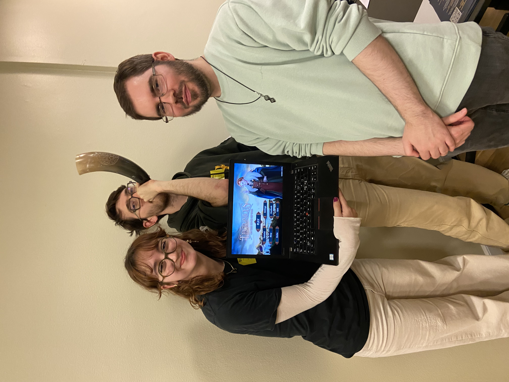

copy.gif)

 Game development internship · Copenhagen, Denmark
Game development internship · Copenhagen, Denmark
GAME DEVELOPMENT INTERNSHIP · 2026
GAMUCATEX
Game Development Intern · Unity · C# · Figma · Git
During my five-month internship in Copenhagen, I worked alongside developers and designers on the prototyping, development, testing, and iteration of gameplay features.
What I worked on
- Collaborated with developers and designers to prototype gameplay mechanics in Unity.
- Developed gameplay features using C#.
- Designed wireframes and gameplay flows in Figma.
- Participated in feature testing, iteration, and Agile sprint planning.
- Used Git for version control and team collaboration.
Some project details and assets cannot be publicly displayed due to confidentiality requirements.